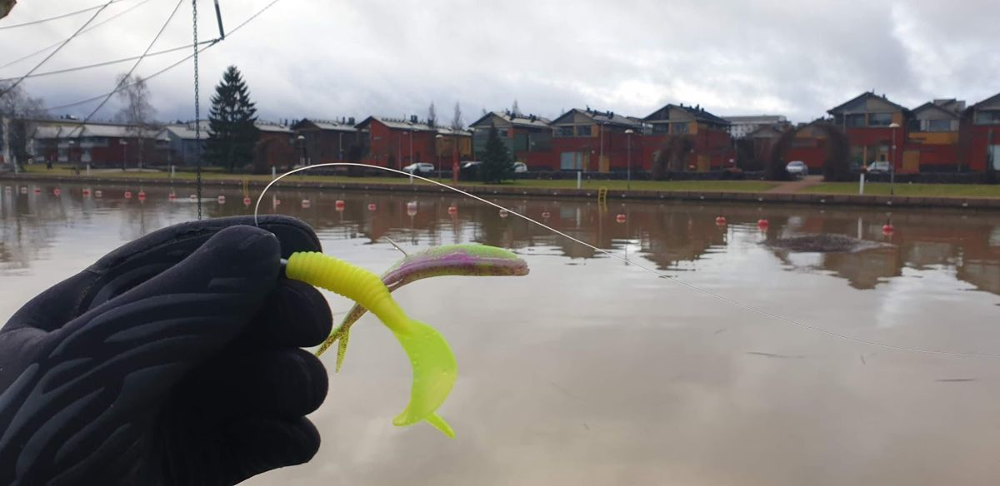
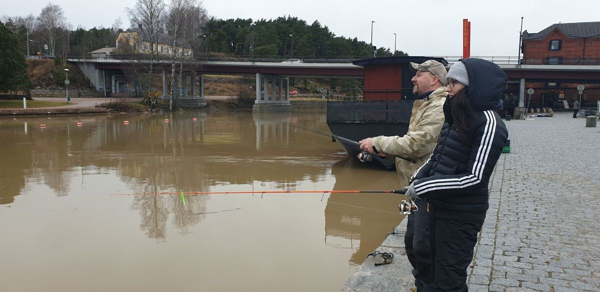
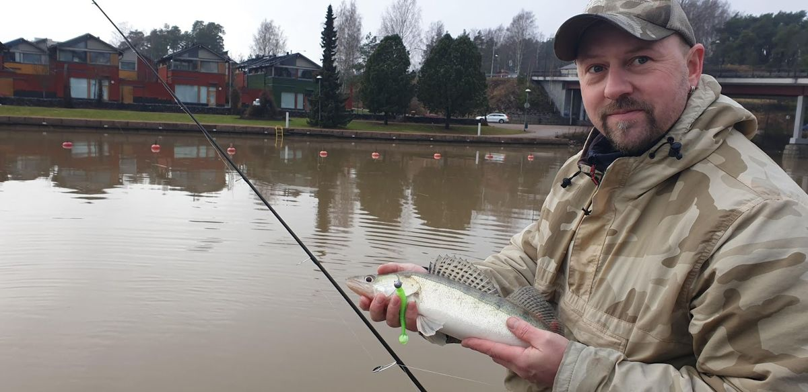
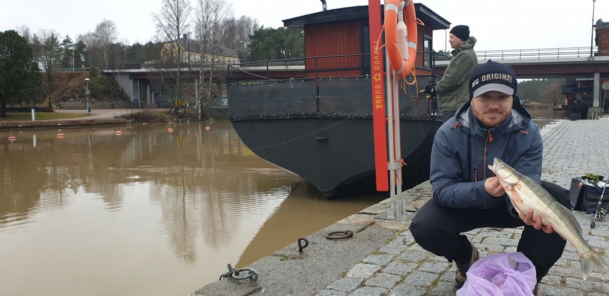
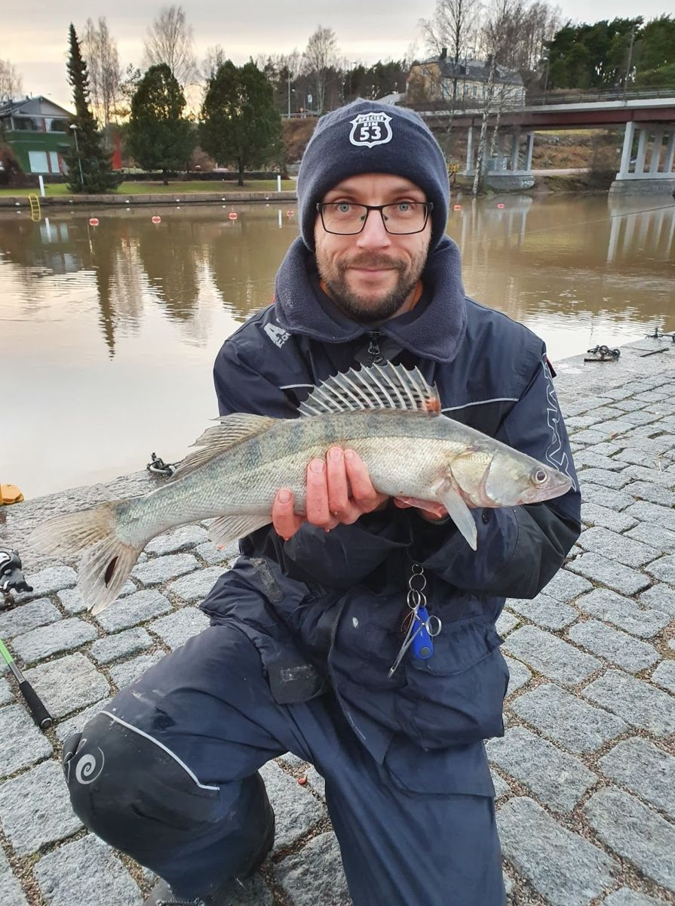
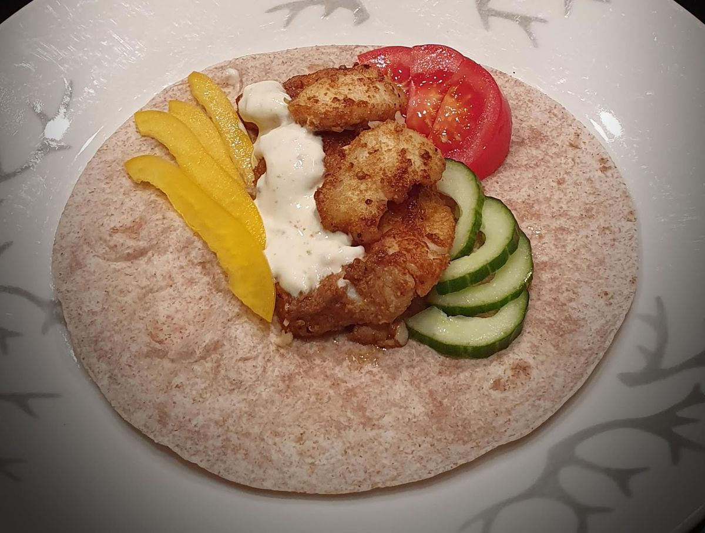
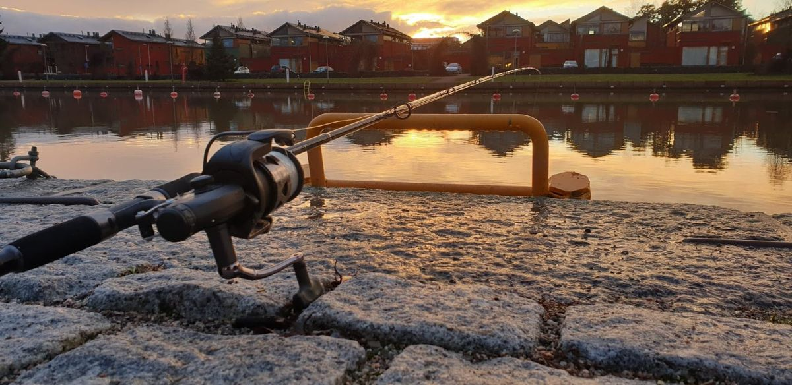

Blogitekstit · Helmikuu 2020
Ei ollut C&R reissu - Beast Fishing Teamin kanssa Porvoonjoella
Kaupallinen yhteistyö Paitakulman kanssa.

Kun mennä vuonna suunnittelin kuluvan vuoden kalenteriin kalareissujen ajankohtia, oli maaliskuulle merkitty kuhanpilkintää Joni Harjun kanssa. Tammikuu aikana huomasin, että Porvoonjoella kalassa käyvä Beast Fishing Team teki postauksia saaliiksi saaduista kuhista. Idea tammi-helmikuun kuhapinnasta heräsi.
Kyselin tietysti olisiko pariskunta halukas lähteä kalaan kanssani joelle, pelipaikat olisivat entuudesta tutut, vaikka en kalassa joella käykään.
Porvoonjoelle menon houkuttelevuutta nosti tiimiläisten into lähteä oppaaksi ja seuraksi joelle.
”Moro. Onnistuu varmasti, pitää vähän seurailla jäiden kehitystä. Eilen oli vaan muutama aukko mistä heitellä, tänään rupes sulamaan urakalla mutta vähän jäälautat haittas kalastusta. Tsemppiä ennätys yritykseen💪.” – Beast Fishing Team
Keittiön seinäkalenteria kun tuijottelin, näen päivämäärälle 8.2. merkityn Suomi madepilkkii -tapahtuma Petäyksessä Vanajaveden rannalla. Sunnuntain retkipäivän sovimme tyttäreni synttäreillä Timin kanssa ja kalalle mentäisiin, oli jäitä tai ei. Tuon reissun voi unohtaa, lähdetään edellisenä viikonloppuna kalalle jonnekin.
Onneksi madepinna napsahti jo tammikuussa, tuosta reissusta voi lukea tarinan tästä.
Kuhan suhteen ei kiire olisi, vuotta kun on jäljellä vielä yli 330 päivää ja parhaat kuha-ajat ovat vasta edessä. Sovimme Timin kanssa lähtevämme jigailemaan Porvooseen ja mukaan lähtisi oppaiksi Beast Fishing Team.


Saavuimme Timin kanssa rantaan Porvoon Paahtimo Bar & Cafen luokse hieman ennen yhtätoista. Ennen joelle tuloa koukkasimme Motonetissä, josta matkaan lähti leikaripainoja, uudet pyyhkimensulat ja muutama toukka.
Viimeinen kirjaimellisesti, toukat jotka jääkaapissa olivat kerenneet koteloitumaan. Mainitsin asiasta myyjälle jolla oli pelisilmää ja sain kolme purkkia toukkia kaupanpäällisinä.
Rannalla oli jigaajia tasaisesti ympäriinsä ja näkyi kalojakin nousevan sieltä täältä. Ensimmäinen kalakontakti tulee vieruskaverille, kun hän nostaa päivän toisen kuhan kohti kalalaukun uumenia. Itse nostelen pohjasta jigejä ja katkenneita siimoja.
”Mitallinen ja suusta kii”, kuuluu kommentti onnittelujeni perään. Lopulta meidänkin vavoissa tärähtää, Timin vapa on kaarella ja kala siiman päässä; ”Kylkikala”, haaviin ja takaisin elementtiinsä.
Elämää on joessa, tämä lupaa hyvää.
- Porvoonjoelle kalastusluvat voi hankki Kalakortti.com -palvelusta.
- Joella noudatetaan valtakunnallista kuhan minimialamittaa eli 42 cm.
- https://www.porvoo.fi/erityiskalastuslupa
Beast Fishing Team - Ei ollut C&R reissu…


Kuten olen monesti kertonut, on minulla tavoitteena tavata kuluvan vuoden aikana uusia ihmisiä ja kalastaa heidän kanssaan.
Kuhanpyyntiin olisi varmasti monta opasta, nyt halu veti tutustumaan Beast Fishing Teamin jäseniin. Pieni tihkusade kastelee kalastajia, osa luovuttaa ja lähtee kotia. Me jatkamme sinnikkäästi jutellen mukavia ja kylkikaloja takaisin samalla laskien.
Susanna Huittinen (27) ja Jani Tossavainen (42) Porvoosta muodostavat Beast Fishing Teamin, kilpailujen osalta kauniimpi osapuoli on ollut mukana kisoissa viimeiset pari vuotta.
”Tavattiin ekan kerran 29.05.2018 jolloin sovittiin treffit hauenkalastuksen parissa, sillä reissulla ollaan edelleen ja minun kalastusharrastus lähti kunnolla siitä nousuun.
Kaikki opit on ”imetty” Janilta. Jani on kisoja kierrellyt paljon enemmän, kun mä. Mulla ekat kisat ollut vasta meidän suhteemme aikana. Vierailevana tähtenä parissa tiimissä mukana ja nyt mennään kisoissa kaksin omana tiiminä. Toukokuun lopussa on oltu yhdessä 2 vuotta”, kertoo Susanna.
Kalastajien kanssa juttelu ja tietojenvaihto on yksi hieno osa upeaa harrastustamme. Kaikesta kuulee, että Janilla on joelta vuosien kokemus. Tulee juttua Mäntälän seudun matikoista, naapurijoen toutaimista ja talvisesta kuhanpilkinnästä. Polte on miehellä kova jäille…


Rupattelun lomassa Jani ja Susu saavat kylki, maha tai peräpuolelta kiinni jääneitä kuhia. Opin itsekin erottamaan hiljalleen mistä tietää kalan olevan suusta tai muualta kiinni.
”Kylkikala, vetää sivulle”. Kertoo Jani.
”Kuten ”Sussu kertoi, viime vuonna kalastettiin vasta yhdessä tiiminä kisoja. Sitä ennen Sussu oli mukana muissakin tiimeissä ja mun matkassa hakemassa kokemusta,” jatkaa Jani.
Lieneekö parisuhde antanut puhtia Susannalle ja Janille kisoihin koska Suomen kovimmista kisoista on tullut kohtuu hyviä sijoituksia; Happy Angler Challengessa Lohjalla 6/170, Ruoto Predatorissa 11/47.
Kerron heille tietäväni monta kalastajaa, joiden parisuhde on päättynyt, kun kalastus vie ja perhe jää sivuosaan. Itse pyrin siihen, että perhe-elämä ja kalastus on tasapainossa. Olen esimerkiksi vähentänyt ilta -ja muita menoja huomattavasti viime vuodesta lähtien. Vaimon menot merkitään kalenteriin ja hän saa mennä aina kun mahdollista, omat päivälle osuvat kalareissuni ilmoitan hyvissä ajoin etukäteen.
”Menen aika pitkälti itse kalaan aina kun mahdollista, ja jos molemmilla on mahdollisuus mennä niin sitten mennään yleensä yhdessä”, kertoo Jani.
”Haasteita toki on ollut. Mulla on lapset pieniä vielä, ne ovat mulla joka toinen viikko ja joka toinen viikko isällään. Pääasiassa mennään yhdessä Janin kanssa kalaan, mutta on tilanteita, esim. mun lapsiviikoilla, etten pääse mukaan, niin en ole myöskään esteenä sille, että Jani pääsee kalalle. Se on itseasiassa nytkin kalassa ja mä lasten kanssa kotona, jatkaa Susanna.”


Pikselit piirtävät kännykän näytölle; 14:00. Valitettavasti pariskunnan pitää lähteä omille teilleen, Susanna suuntaa Porvoon keskustan R-kioskille ja Jani kotiin lapsien luokse.
Me siirrymme Timin kanssa alavirtaan onkimaan täkyjä, ja hetken yrittämisen jälkeen paikallisen S-Marketin kalahyllylle ostamaan neulamuikkuja.


Sattuipa Kalamaratonista ja somesta tuttu bloggari Teemu Alanderkin seurueineen joelle. Teemu oli onnistunut nappaamaan upean yli 50 cm kuhan, jonka kanssa suostui jopa poseeraamaan. Teemun retkirapsan voi lukea tästä.
Saavumme uudelleen rantaan. Timi virittää pohjaongen muikkusyötillä ja minä vaihdan siiman päähän punertava-vihertävä-punahäntäisen jigin, 12 g nupilla. Ensimmäinen heitto ja tälli, kala haaviin, irti ja takaisin. Varmasti mittakala sai jatkaa elämäänsä.
Toinen heitto. Tälli muurin juuressa, nyt pysyy kiinni eikä Janin sanoja muistellen vedä sivulle.
Timi koukkaa kalan haaviin. Nyt voi hengähtää. Mittaus, upeasti pyrstö asettuu 53 cm viivalle. Lajipiste 7 sai upean tarinan, ansaitsemansa sellaisen.
Lopulta myös Timi saa pohjaongella 40 cm kuhan, koukku irti ja takaisin kasvamaan. Joessa on pakko olla älyttömästi kuhaa näin alkuvuodesta. Meidän kylkikalojen yhteenlaskettu suhde on 20/1, omalla kohdalla 7/1.


Illalla Timi lähettää mesessä kuvan saatetekstin kera; kalatacoja. Kuhan matka ravintoketjussa jatkuu Laitisten perheen ravintona.


Kokeilen hetken pohjaongintaa ja hengähdän reppujakkaralle istuen. Vihoitteleva olkapää on kipeytynyt heittämisestä sen verran, että nyt voisi hetken vain onkia.
On se vaan hienoa tuijottaa kohoa, joka hiljalleen lipuu kohti alavirtaa katuvalojen loisteessa. Onkikausi 2020 on avattu.
Nappaan vielä autolle kävellessä kahdelle naiselle kuvan heistä ja upeasta Porvoosta, jonka valot värjäävät joen heidän takanaan. Tähän hetkeen on hieno lopettaa.
Ja mikä ei ollut C&R reissu? No se hauenkalastusreissu, joka sovittiin somepalstalla Susannan ja Janin kesken. Kireitä siimoja, stemppiä kisoihin ja ennen kaikkea rakastakaa toisianne!
Seuraa ennätyksen etenemistä
Pidän kirjaa lajilistasta ja tarkemmasta retkidatasta Google -taulukossa, joka löytyy jokaisesta ennätysyrityksen postauksesta. Tästä linkistä taulukko avautuu uuteen ikkunaan.
Seurantatilanne löytyy myös blogini oikeasta yläreunasta.
Vuoden aikana ennätysyrityksessä kulkee mukaan myös tämä kalataitelija-graaffikko Sakke Yrjölän suunnittelema SPECIES FIN 53 -merkki.
Paitakulmassa painatin pipoon ja lippikseen saman merkin. Tavoitteeni on saada aikaiseksi 53 saaliskuvaa tekstin alussa tekemääni taulukkoon joissa kaikissa kuvissa näkyisi tuo kyseinen tunnus.
Paitakulma on Suomalainen perheyritys, joka haluaa panostaa laatuun ja asiakastyytyväisyyteen. Tutustu yrityksen palveluihin tästä.